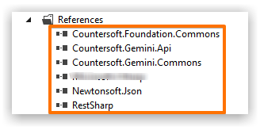
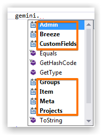
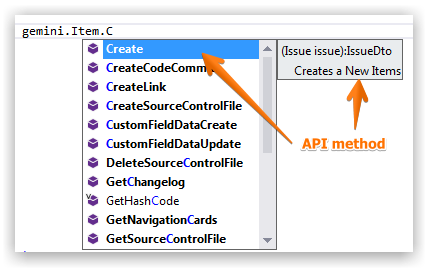

Microsoft .NET Developers can leverage the proxy object to consume the REST API.
Reference the following assemblies.

All API calls require valid Gemini user credentials.
The URL represents the location of your Gemini instance.
Authenticate by providing plain text username and password.
ServiceManager gemini = new ServiceManager("http://server/gemini", "username", "password", string.Empty);
Authenticate by providing plain text username and the user's API key (found under User Profile).
ServiceManager gemini = new ServiceManager("http://server/gemini", "username", string.Empty, "apikey");
Authenticate by using Windows authentication.
ServiceManager gemini = new ServiceManager("http://server/gemini");
After authentication you can validate successful login.
UserDto user = gemini.Admin.WhoAmI();
if (user.Entity.Id == 0)
{
// did not authenticate
}
REST API end-points are exposed through the ServiceManager object.

For each end-point category (e.g. Items) available methods are exposed (e.g. Create Item).
